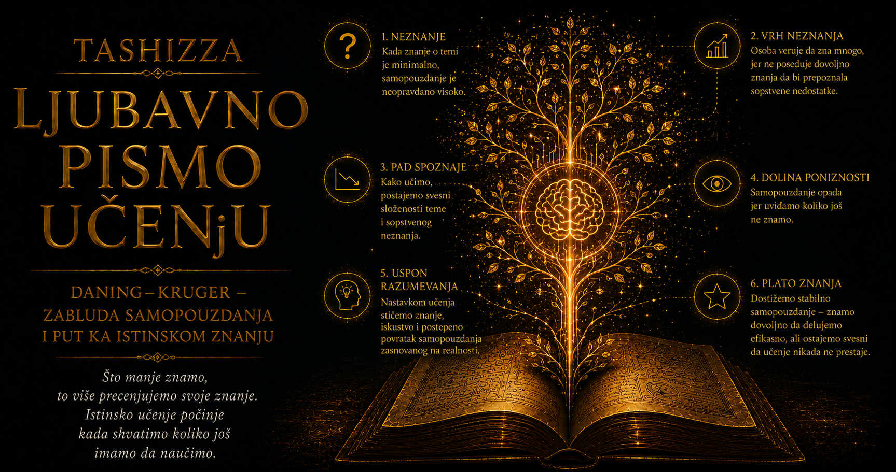

Ljubavno pismo učenju

Među granicama ljudskog znanja postoji jedna koju naročito teško opažamo: da bismo prepoznali sopstvenu grešku, često moramo posedovati upravo ono znanje koje nam je nedostajalo dok smo je pravili. Čovek može jasno osetiti zbunjenost kada se pred njim nađe potpuno nepoznata oblast, ali neznanje se ne pojavljuje uvek kao praznina koju je lako uočiti. Ponekad dolazi prerušeno u uredno objašnjenje, brz zaključak i spokojno uverenje da smo razumeli dovoljno. Um tada ne zastaje pred nepoznatim, jer još nema merila pomoću kojih bi prepoznao koliko mu toga izmiče.
Džastin Kruger i Dejvid Daning dali su krajem dvadesetog veka eksperimentalni oblik tom starom problemu samospoznaje. Njihovo istraživanje nije pokušavalo da podeli ljude na mudre i nesposobne, niti da nečiju opštu inteligenciju odredi jednom psihološkom etiketom. Zanimalo ih je kako ljudi procenjuju svoj učinak u određenoj oblasti i zbog čega se najveće razlike između samoprocene i postignutog rezultata često pojavljuju upravo među onima koji su zadatak rešili najslabije.
Polazna pretpostavka bila je istovremeno jednostavna i duboko uznemirujuća. Veštine koje čoveku omogućavaju da nešto uradi dobro često su potrebne i da bi procenio koliko je to dobro uradio. Gramatičko znanje pomaže nam da sastavimo pravilnu rečenicu, ali nam isto znanje omogućava da primetimo nepravilnost. Logičko rasuđivanje vodi prema valjanom zaključku, a zatim služi i kao sredstvo za otkrivanje nedoslednosti u zaključku. Kada takva sposobnost nije dovoljno razvijena, nastaje dvostruka teškoća: učinak slabi, dok mogućnost prepoznavanja razloga tog slabog učinka ostaje ograničena.
U radu objavljenom 1999. godine Kruger i Daning sproveli su četiri studije u kojima su učesnici rešavali zadatke povezane sa humorom, gramatikom i logičkim rasuđivanjem, a potom procenjivali svoj rezultat i položaj u odnosu na druge. Izbor različitih područja omogućio je istraživačima da posmatraju isti problem kroz formalne zadatke sa jasnijim odgovorima i kroz procene koje zavise od osetljivosti za društvene kriterijume. U svakom slučaju trebalo je uporediti dve slike: ono što je učesnik zaista postigao i ono što je verovao da je postigao.
Učesnici sa najslabijim rezultatima znatno su precenjivali sopstveni učinak. To ipak nije značilo da su sebe redovno proglašavali najboljima ili da su pokazivali bezgranično samopouzdanje. Njihova procena najčešće ih je smeštala bliže sredini grupe, daleko iznad mesta koje su zauzimali prema stvarnom rezultatu. U tome se nalazi važna nijansa koju popularna tumačenja često gube: pogrešna samoprocena može biti tiha, umerena i subjektivno sasvim razumna. Čovek ne mora verovati da je izuzetan; dovoljno je da ne vidi koliko njegovom radu nedostaje do prihvatljivog merila.
Najuspešniji učesnici pokazivali su drugačiju vrstu netačnosti. Ponekad su potcenjivali koliko su njihovi rezultati bolji od rezultata ostalih, jer su polazili od sopstvenog iskustva zadatka. Ono što je njima izgledalo jasno i lako pripisivali su i drugim ljudima, pa su pretpostavljali da je njihov učinak manje izuzetan nego što je zaista bio. Na oba kraja raspodele pojavljuje se ista teškoća: čovek svet najpre procenjuje iz sopstvene perspektive, a zatim pokušava da zamisli znanje, iskustvo i sposobnosti koje pripadaju drugima.
Posebno važan deo prvobitnog istraživanja pokazao je da učenje može poboljšati i učinak i sposobnost samoprocene. Kada su slabije uspešni učesnici dobili dodatno znanje, stekli su kriterijume pomoću kojih su jasnije uočavali nedostatke svojih prethodnih odgovora. Znanje je, dakle, obavilo dvostruki posao: osposobilo ih je da zadatak rešavaju bolje i pružilo im merilo prema kojem su mogli pouzdanije da procene koliko su ranije grešili. U tom nalazu nalazi se najdragocenija obrazovna poruka čitavog istraživanja, jer slepa tačka nije predstavljena kao nepromenljiva osobina čoveka, nego kao područje koje se može osvetliti učenjem, vežbom i povratnom informacijom.
Daning–Krugerov efekat ubrzo je napustio stručne časopise i postao deo opšte kulture. Na društvenim mrežama, u političkim raspravama i poslovnom svetu često se koristi kao otmenija zamena za tvrdnju da je protivnik glup, neobrazovan ili nesvestan sopstvene nesposobnosti. Takva upotreba pojma uklanja njegovu najneprijatniju i najkorisniju poruku. Istraživanje ne opisuje posebnu vrstu ljudi koju sa bezbedne udaljenosti možemo prepoznati i obeležiti, jer svako od nas poseduje oblasti u kojima mu nedostaje dovoljno znanja da bi tačno procenio granice sopstvenog razumevanja.
Poznata internetska kriva sa „vrhom gluposti”, „dolinom očaja” i postepenim usponom prema mudrosti takođe ne potiče iz izvornog rada Krugera i Daninga. Ona je slikovita metafora procesa učenja, ali ne predstavlja grafikon njihovih eksperimentalnih rezultata. Prvobitne studije nisu tvrdile da svaki početnik prolazi kroz istovetne psihološke etape, da neznanje obavezno proizvodi krajnju samouverenost ili da stručnost čoveka neminovno čini skromnim. Stvarna veza između znanja i sigurnosti složenija je, promenljiva i snažno zavisna od oblasti, zadatka, iskustva i kvaliteta povratne informacije.
Čovek može biti izvanredan stručnjak u jednoj oblasti i početnik u drugoj, pri čemu ugled stečen prvim znanjem ponekad otežava priznanje granice u drugom području. Lekar može pouzdano govoriti o svojoj specijalnosti, a istovremeno donositi površne zaključke o ekonomiji; vrstan programer može preceniti razumevanje pedagogije; uspešan preduzetnik može sopstveno iskustvo pretvoriti u univerzalno pravilo za tuđe živote. Opšta inteligencija, obrazovanje i profesionalni položaj ne stvaraju trajnu zaštitu od pogrešne samoprocene, naročito kada čovek napusti područje u kojem su njegova merila izgrađena dugotrajnim radom.
Odatle proizlazi važna razlika između autoriteta i autoritarnosti. Autoritarna osoba sigurnost glasa koristi kao zamenu za obrazloženje, neodlučnost sagovornika tumači kao slabost i očekuje da položaj prekine pitanje pre nego što su dokazi razmotreni. Stvarni autoritet poznaje predmet dovoljno duboko da vidi njegove granice, razlikuje utvrđenu činjenicu od verovatne pretpostavke i ume da objasni zbog čega je promenio mišljenje. Njegov oprez može zvučati manje upečatljivo od odlučnosti površnog govornika, jer znanje otkriva mnoštvo uslova, izuzetaka i posledica koje jednostavna slika još ne obuhvata.
Zbog toga glasniji čovek ne mora posedovati pouzdaniji odgovor, kao što tiši govor ne pokazuje nedostatak znanja. Stručnjak često bira precizne ograde, govori o verovatnoći, navodi ograničenja podataka i ostavlja prostor za korekciju. Posmatrač naviknut da sigurnost poistovećuje sa sposobnošću može takvu intelektualnu odgovornost protumačiti kao kolebanje, dok će nastup osobe oslobođene svesti o složenosti doživeti kao vođstvo. Daning–Krugerov efekat zato ima i društvenu težinu: zajednica koja nagrađuje samouveren nastup pre nego proverljivo znanje lako predaje odluke ljudima čija je najveća prednost odsustvo sumnje.
U obrazovanju se ista pojava vidi kada učenik prepoznavanje zameni razumevanjem. Dok sluša jasno objašnjenje, sve mu može izgledati poznato i lako, jer tok misli pred njim gradi nastavnik. Kada ostane sam pred novim problemom, otkriva da još ne ume da izabere postupak, objasni razlog ili prenese naučeno u drugačiji kontekst. Ponovno čitanje beležaka pojačava osećaj bliskosti sa gradivom, dok samostalno prisećanje, rešavanje bez pomoći i objašnjavanje drugome otkrivaju stvarnu snagu znanja. Osećaj lakoće prijatan je pratilac učenja, ali bez provere ostaje nepouzdano merilo napretka.
Dobra povratna informacija ima presudnu ulogu zato što čoveku donosi pogled koji sam sebi ne može lako pružiti. Ona mora biti dovoljno precizna da pokaže mesto i prirodu greške, dovoljno razumljiva da učenik iz nje izvede novo pravilo i dovoljno pravovremena da se poveže sa postupkom koji ju je izazvao. Sama ocena često govori premalo: saopštava da rezultat nije zadovoljavajući, ali ne gradi merilo pomoću kojeg bi sledeći pokušaj mogao biti bolji. Učitelj, urednik, mentor ili pouzdan sagovornik proširuju naše unutrašnje vidno polje kada obrazlože ono što su primetili i omoguće nam da njihovu procenu ubuduće postepeno pretvorimo u sopstvenu veštinu.
Podjednako je važna i sredina u kojoj greška može biti priznata bez poniženja. Ako svako priznanje neznanja donosi podsmeh, gubitak ugleda ili kaznu, ljudi će naučiti da prikrivaju nesigurnost, brane prvi odgovor i glume izvesnost. Organizacije tada ostaju bez upozorenja koja su mogla sprečiti štetu, jer zaposleni ćute pred odlukama nadređenih, stručnjaci ublažavaju neslaganje, a početnici ne postavljaju pitanja koja bi razotkrila nerazumevanje. Kultura učenja zahteva dostojanstvo rečenice „ne znam”, uz obavezu da posle nje uslede provera, savetovanje i ozbiljan rad.
Kasnija istraživanja pokazala su da poznati obrazac treba tumačiti pažljivije nego u njegovim najpopularnijim verzijama. Na veličinu jaza između učinka i samoprocene utiču težina zadatka, pouzdanost testa, način postavljanja pitanja, ograničenja skale, poređenje sa drugima, grupisanje rezultata i statistička regresija ka proseku. Deo prvobitno prikazane razlike može nastati iz samog načina merenja, dok druga istraživanja i dalje podržavaju zaključak da slabije znanje često otežava prepoznavanje sopstvenih grešaka. Naučna rasprava time je početno pitanje očistila od preširokih tvrdnji i usmerila ga prema preciznijem proučavanju samoprocene.
Takva metodološka preispitivanja predstavljaju najbolju potvrdu duha koji bi ova ideja trebalo da podstakne. Naučna tvrdnja ne dobija doživotnu zaštitu zato što je postala poznata, uverljiva ili korisna u svakodnevnom govoru. Njeni postupci merenja ponovo se proveravaju, alternativna objašnjenja ulaze u raspravu, a zaključci menjaju obim u skladu sa novim dokazima. Spremnost istraživača da razlikuju snažan nalaz od privlačnog preterivanja pokazuje kako izgleda intelektualna skromnost koja deluje: ona ne napušta znanje, nego ga čini tačnijim.
Sa tim procesom povezana je kalibracija, odnosno podudarnost između naše sigurnosti i verovatnoće da smo u pravu. Dobro kalibrisana osoba može govoriti odlučno kada raspolaže snažnim dokazima, oprezno kada su podaci nepotpuni i otvoreno priznati trenutak u kojem nema dovoljno znanja za zaključak. Takva sposobnost ne zahteva neprekidnu sumnju koja bi onemogućila delovanje, nego disciplinu da različitim tvrdnjama pridružimo različite stepene sigurnosti. Ona se razvija kada svoja predviđanja beležimo pre ishoda, upoređujemo procene sa rezultatima, tražimo povratnu informaciju i posmatramo sopstvene greške kao podatke o načinu mišljenja.
Digitalno doba dodatno je produbilo razliku između pristupa odgovoru i sposobnosti da se odgovor proceni. Pretraživači i generativna veštačka inteligencija mogu za nekoliko trenutaka ponuditi uverljivo objašnjenje, programski kod ili stručno oblikovanu analizu, dok korisnik možda nema dovoljno znanja da primeti izmišljenu činjenicu, pogrešnu pretpostavku ili neprimenljiv savet. Uglađen izraz tada pozajmljuje autoritet sadržaju, a brzina dobijanja rezultata stvara osećaj da je jednako brzo nastalo i razumevanje. Što moćniji alat koristimo, važnije postaje znanje koje nam omogućava da proverimo njegov proizvod, pronađemo pouzdane izvore i prepoznamo odluke koje ne smemo prepustiti prividnoj sigurnosti.
Isti oprez potreban je kada procenjujemo tuđu stručnost. Titula, položaj, broj pratilaca i ubedljiv nastup mogu ponuditi korisne početne podatke, ali nijedan od njih samostalno ne garantuje pouzdanost zaključka. Vredi pitati da li osoba govori unutar oblasti koju zaista poznaje, pokazuje li izvore, razlikuje li činjenice od tumačenja, priznaje li granice podataka i ume li da odgovori na ozbiljan prigovor bez omalovažavanja sagovornika. Autoritet se gradi dugim dodirom sa stvarnošću i spremnošću da se pred njom ispravi; autoritarnost traži poslušnost upravo onda kada bi provera bila najpotrebnija.
Najdublja vrednost ideje Krugera i Daninga nalazi se u njenom zahtevu da pogled koji tako lako usmeravamo prema tuđim zabludama vratimo prema sebi. Kada u raspravi odmah prepoznamo nečiju nekompetentnost, još nismo pokazali da razumemo efekat; pokazali smo koliko nam je lako da ga koristimo kao oružje. Razumevanje počinje pitanjem koje je neprijatnije i plodnije: u kojoj oblasti trenutno nemam dovoljno znanja ni da bih tačno izmerio sopstveno neznanje?
Odgovor na to pitanje ne vodi samoponiženju, već učenju koje gradi pouzdan oslonac. Potrebni su nam učitelji koji objašnjavaju kriterijume, sagovornici koji umeju da ospore naše zaključke bez ponižavanja, sistemi koji proveravaju odluke i lična hrabrost da izgovorimo „ne znam” pre nego što sigurnost bez dokaza postane postupak sa posledicama. Čovek učenjem ne stiče samo nove činjenice i veštine. On postepeno razvija unutrašnje merilo kojim jasnije razlikuje ono što zna, ono što tek naslućuje i široko područje pred kojim još treba pažljivo da sluša.
U tom razvoju nalazi se jedno od najlepših obećanja obrazovanja. Svako novo znanje osvetljava deo sveta, ali istovremeno otkriva obrise pitanja koja ranije nismo umeli ni da postavimo. Učen čovek ne postaje manji pred širinom nepoznatog; postaje odgovorniji prema onome što govori, pažljiviji prema dokazima i slobodniji od potrebe da sigurnošću prikriva praznine. Zrelost uma ne meri se odsustvom grešaka, nego sposobnošću da ih prepozna, podnese njihovu neprijatnost i pretvori ih u sledeći korak učenja.